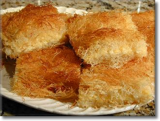

Ararat Home Kadayif
Yield: 24 servings
Ingredients
- 2 lb Kadayif dough(Shredded Filo)
- 1 1/2 c Butter, melted
- 1 qt Half and half cream
- 1 qt Heavy cream
- 3/4 c Cornstarch
- 3/4 c Milk
- 4 c Sugar
- 3 c Water
- Few drop fresh Lemon Juice
Directions
Cut and fluff 1 lb of Kadayif dough in bowl with hands. Add half melted butter and mix until strands are evenly coated. Spread evenly in lightly buttered 17x13-inch baking pan.
Combine half and half and heavy cream in large saucepan. Bring to slow boil over low heat.
Combine cornstarch and milk, stirring until cornstarch is dissolved. Slowly add to cream mixture, stirring constantly, until mixture returns to slow boil. Spread hot cream filling over kadayif in pan.
Cut and fluff remaining 1 lb. of kadayif in bowl. Add remaining melted butter and mix with hands until strands are evenly coated. Spread over top of cream layer, pressing down firmly to form an even surface.
Place on lowest oven rack and bake at 450 degrees F. until golden brown, about 20-25 minutes. If not golden, move pan to top rack and bake 5 to 10 minutes longer.
Meanwhile, prepare syrup. Combine sugar and water in saucepan and boil 5 to 10 minutes. Add lemon juice. Cool. Pour cold syrup evenly over kadayif as soon as it is removed from the oven.
Cut into squares to serve. Enjoy!